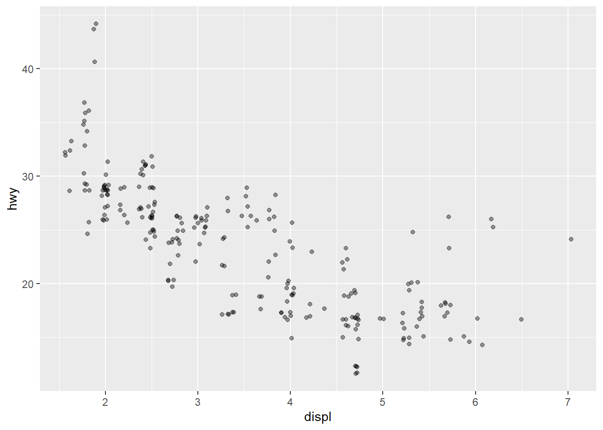
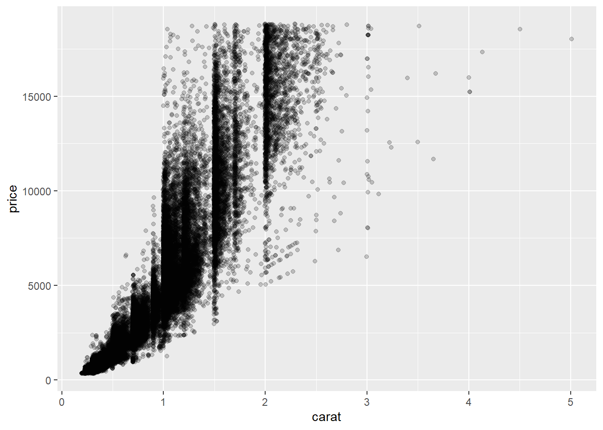
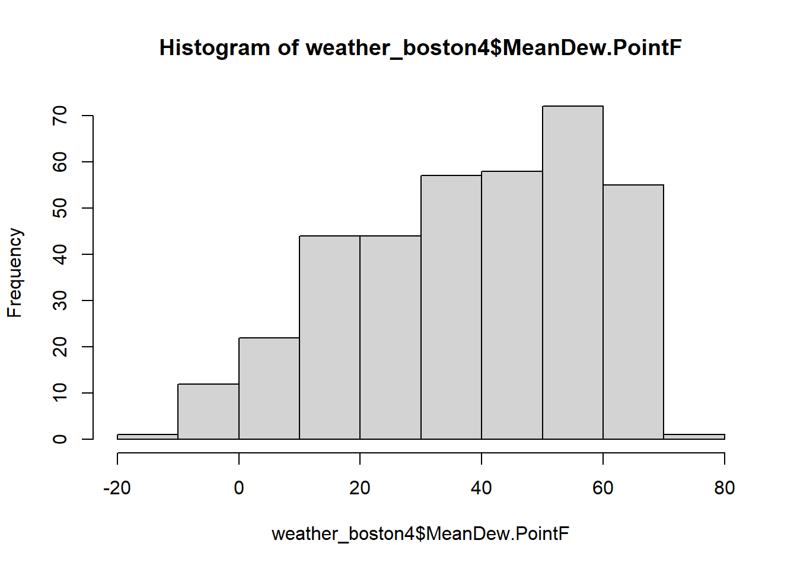
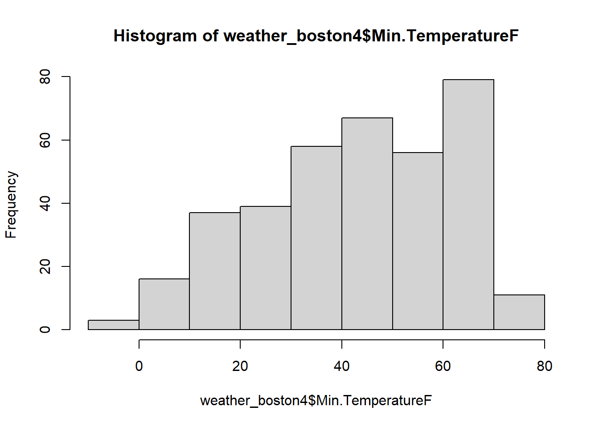
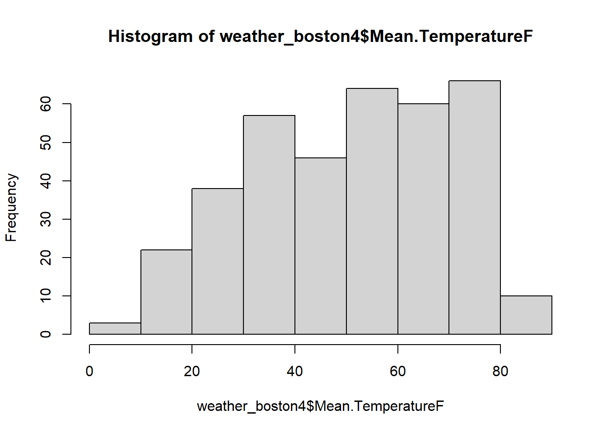

Chapter 15 Tidy the data
The first symptoms of the data is that column names are values. In particular, the column names X1-X31 represent days of the month, which should really be values of a new variable called day.
We can use melt() function exactly this scenario.
weather_boston2 = melt(weather_boston, id=c("year","month","measure"), measure=patterns("X"), variable.name = "day", value.name= "value")
# View the head
head(weather_boston2)## year month measure day value
## 1: 2014 12 Max.TemperatureF X1 64
## 2: 2014 12 Mean.TemperatureF X1 52
## 3: 2014 12 Min.TemperatureF X1 39
## 4: 2014 12 Max.Dew.PointF X1 46
## 5: 2014 12 MeanDew.PointF X1 40
## 6: 2014 12 Min.DewpointF X1 26The resulting data now suffers from another common symptom of messy data: values are variable names. Specifically, values in the measure column should be variables (i.e. column names) in our dataset.
The dcast() function is designed to help with this.
weather_boston3 <- dcast(weather_boston2, year+month+day~measure, value.var = "value")
head(weather_boston3)## year month day CloudCover Events Max.Dew.PointF Max.Gust.SpeedMPH
## 1: 2014 12 X1 6 Rain 46 29
## 2: 2014 12 X2 7 Rain-Snow 40 29
## 3: 2014 12 X3 8 Rain 49 38
## 4: 2014 12 X4 3 24 33
## 5: 2014 12 X5 5 Rain 37 26
## 6: 2014 12 X6 8 Rain 45 25
## Max.Humidity Max.Sea.Level.PressureIn Max.TemperatureF Max.VisibilityMiles
## 1: 74 30.45 64 10
## 2: 92 30.71 42 10
## 3: 100 30.4 51 10
## 4: 69 30.56 43 10
## 5: 85 30.68 42 10
## 6: 100 30.42 45 10
## Max.Wind.SpeedMPH Mean.Humidity Mean.Sea.Level.PressureIn Mean.TemperatureF
## 1: 22 63 30.13 52
## 2: 24 72 30.59 38
## 3: 29 79 30.07 44
## 4: 25 54 30.33 37
## 5: 22 66 30.59 34
## 6: 22 93 30.24 42
## Mean.VisibilityMiles Mean.Wind.SpeedMPH MeanDew.PointF Min.DewpointF
## 1: 10 13 40 26
## 2: 8 15 27 17
## 3: 5 12 42 24
## 4: 10 12 21 13
## 5: 10 10 25 12
## 6: 4 8 40 36
## Min.Humidity Min.Sea.Level.PressureIn Min.TemperatureF Min.VisibilityMiles
## 1: 52 30.01 39 10
## 2: 51 30.4 33 2
## 3: 57 29.87 37 1
## 4: 39 30.09 30 10
## 5: 47 30.45 26 5
## 6: 85 30.16 38 0
## PrecipitationIn WindDirDegrees
## 1: 0.01 268
## 2: 0.10 62
## 3: 0.44 254
## 4: 0.00 292
## 5: 0.11 61
## 6: 1.09 313Now, the data is tidy: each row is an observation, each column is a variable.
15.1 prepare for analysis
15.1.1 Clean up dates
Now that the weather_boston dataset adheres to tidy data principles, the next step is to prepare it for analysis. We’ll start by combining the year, month, and day columns and recoding the resulting character column as a date. We can use a combination of base R, stringr, and lubridate to accomplish this task.
## year month day CloudCover Events Max.Dew.PointF Max.Gust.SpeedMPH
## 1: 2014 12 1 6 Rain 46 29
## 2: 2014 12 2 7 Rain-Snow 40 29
## 3: 2014 12 3 8 Rain 49 38
## 4: 2014 12 4 3 24 33
## 5: 2014 12 5 5 Rain 37 26
## 6: 2014 12 6 8 Rain 45 25
## Max.Humidity Max.Sea.Level.PressureIn Max.TemperatureF Max.VisibilityMiles
## 1: 74 30.45 64 10
## 2: 92 30.71 42 10
## 3: 100 30.4 51 10
## 4: 69 30.56 43 10
## 5: 85 30.68 42 10
## 6: 100 30.42 45 10
## Max.Wind.SpeedMPH Mean.Humidity Mean.Sea.Level.PressureIn Mean.TemperatureF
## 1: 22 63 30.13 52
## 2: 24 72 30.59 38
## 3: 29 79 30.07 44
## 4: 25 54 30.33 37
## 5: 22 66 30.59 34
## 6: 22 93 30.24 42
## Mean.VisibilityMiles Mean.Wind.SpeedMPH MeanDew.PointF Min.DewpointF
## 1: 10 13 40 26
## 2: 8 15 27 17
## 3: 5 12 42 24
## 4: 10 12 21 13
## 5: 10 10 25 12
## 6: 4 8 40 36
## Min.Humidity Min.Sea.Level.PressureIn Min.TemperatureF Min.VisibilityMiles
## 1: 52 30.01 39 10
## 2: 51 30.4 33 2
## 3: 57 29.87 37 1
## 4: 39 30.09 30 10
## 5: 47 30.45 26 5
## 6: 85 30.16 38 0
## PrecipitationIn WindDirDegrees
## 1: 0.01 268
## 2: 0.10 62
## 3: 0.44 254
## 4: 0.00 292
## 5: 0.11 61
## 6: 1.09 313Convert date column to proper date format using lubridates’s ymd()
# combine year, month day to be a date variable
weather_boston3[,date:=ymd(str_c(year,month,day, sep="-"))] ## Warning: 7 failed to parse.## year month day CloudCover Events Max.Dew.PointF Max.Gust.SpeedMPH
## 1: 2015 2 29
## 2: 2015 2 30
## 3: 2015 2 31
## 4: 2015 4 31
## 5: 2015 6 31
## 6: 2015 9 31
## 7: 2015 11 31
## Max.Humidity Max.Sea.Level.PressureIn Max.TemperatureF Max.VisibilityMiles
## 1:
## 2:
## 3:
## 4:
## 5:
## 6:
## 7:
## Max.Wind.SpeedMPH Mean.Humidity Mean.Sea.Level.PressureIn Mean.TemperatureF
## 1:
## 2:
## 3:
## 4:
## 5:
## 6:
## 7:
## Mean.VisibilityMiles Mean.Wind.SpeedMPH MeanDew.PointF Min.DewpointF
## 1:
## 2:
## 3:
## 4:
## 5:
## 6:
## 7:
## Min.Humidity Min.Sea.Level.PressureIn Min.TemperatureF Min.VisibilityMiles
## 1:
## 2:
## 3:
## 4:
## 5:
## 6:
## 7:
## PrecipitationIn WindDirDegrees date
## 1: <NA>
## 2: <NA>
## 3: <NA>
## 4: <NA>
## 5: <NA>
## 6: <NA>
## 7: <NA>15.1.2 A closer look at column types
It’s important for analysis that variables are coded appropriately. This is not yet the case with our weather_boston data. Recall that functions such as as.numeric() and as.character() can be used to coerce variables into different types.
It’s important to keep in mind that coercion are not always successful, particularly if there’s some data in a column that you don’t expect. For example, the following will cause problems:
## Warning: NAs introduced by coercion## [1] 4.00 6.44 NA 222.00If you run the code above in the console, you’ll get a warning message saying that R introduced an NA in the process of coercing to numeric. This is because it doesn’t know how to make a number out of a string (“some string”). Watch out for this in our weather_boston data!
## Classes 'data.table' and 'data.frame': 396 obs. of 26 variables:
## $ year : int 2014 2014 2014 2014 2014 2014 2014 2014 2014 2014 ...
## $ month : int 12 12 12 12 12 12 12 12 12 12 ...
## $ day : chr "1" "2" "3" "4" ...
## $ CloudCover : chr "6" "7" "8" "3" ...
## $ Events : chr "Rain" "Rain-Snow" "Rain" "" ...
## $ Max.Dew.PointF : chr "46" "40" "49" "24" ...
## $ Max.Gust.SpeedMPH : chr "29" "29" "38" "33" ...
## $ Max.Humidity : chr "74" "92" "100" "69" ...
## $ Max.Sea.Level.PressureIn : chr "30.45" "30.71" "30.4" "30.56" ...
## $ Max.TemperatureF : chr "64" "42" "51" "43" ...
## $ Max.VisibilityMiles : chr "10" "10" "10" "10" ...
## $ Max.Wind.SpeedMPH : chr "22" "24" "29" "25" ...
## $ Mean.Humidity : chr "63" "72" "79" "54" ...
## $ Mean.Sea.Level.PressureIn: chr "30.13" "30.59" "30.07" "30.33" ...
## $ Mean.TemperatureF : chr "52" "38" "44" "37" ...
## $ Mean.VisibilityMiles : chr "10" "8" "5" "10" ...
## $ Mean.Wind.SpeedMPH : chr "13" "15" "12" "12" ...
## $ MeanDew.PointF : chr "40" "27" "42" "21" ...
## $ Min.DewpointF : chr "26" "17" "24" "13" ...
## $ Min.Humidity : chr "52" "51" "57" "39" ...
## $ Min.Sea.Level.PressureIn : chr "30.01" "30.4" "29.87" "30.09" ...
## $ Min.TemperatureF : chr "39" "33" "37" "30" ...
## $ Min.VisibilityMiles : chr "10" "2" "1" "10" ...
## $ PrecipitationIn : chr "0.01" "0.10" "0.44" "0.00" ...
## $ WindDirDegrees : chr "268" "62" "254" "292" ...
## $ date : Date, format: "2014-12-01" "2014-12-02" ...
## - attr(*, ".internal.selfref")=<externalptr>
## - attr(*, "sorted")= chr [1:2] "year" "month"Thus, all of these character variables (except for events) need to be convert to numeric.
Now, see what happens if we try to convert PrecipitationIn to numeric
## Warning: NAs introduced by coercion## [1] 0.01 0.10 0.44 0.00 0.11 1.09 0.13 0.03 2.90 0.28 0.02 NA NA 0.00 0.00
## [16] NA 0.43 0.01 0.00 NA NA 0.05 0.25 0.56 0.14 0.00 0.00 0.01 0.00 0.00
## [31] 0.00 0.00 0.00 0.62 0.57 0.00 0.02 NA 0.00 0.01 0.00 0.00 0.20 0.00 NA
## [46] 0.12 0.00 0.00 0.15 0.00 0.00 0.00 NA 0.00 0.71 0.00 0.10 0.95 0.01 NA
## [61] 0.06 0.05 0.00 0.78 0.00 0.00 0.09 NA 0.07 0.37 0.88 0.05 0.01 0.03 0.00
## [76] 0.23 0.39 0.00 0.02 0.01 0.06 0.00 0.17 0.11 0.00 NA 0.07 0.02 0.00 0.00
## [91] 0.17 0.01 0.26 0.02 NA 0.00 0.00 NA 0.00 0.06 0.01 0.00 0.00 0.80 0.27
## [106] 0.00 0.14 0.00 0.00 0.05 0.09 0.00 0.00 0.00 0.04 0.80 0.21 0.12 0.00 NA
## [121] 0.00 0.00 0.00 0.03 0.39 0.00 0.00 0.03 0.26 0.09 0.09 0.00 0.00 0.00 0.01
## [136] 0.00 0.00 0.06 0.00 0.00 0.61 0.54 NA 0.00 NA 0.00 0.00 0.10 0.07 0.00
## [151] 0.00 0.00 0.00 0.00 0.00 0.02 0.00 0.00 0.00 0.00 0.00 0.00 0.02 0.00 0.00
## [166] 0.00 NA 0.00 0.00 0.27 0.00 0.00 NA 0.00 0.00 NA 0.00 0.00 NA 0.00
## [181] 0.00 0.91 0.38 0.74 0.00 0.00 NA 0.09 0.00 NA NA 0.00 0.00 0.00 NA
## [196] 0.00 0.40 NA 0.00 0.00 0.00 0.04 1.72 0.00 0.01 0.00 0.00 NA 0.20 1.43
## [211] NA 0.00 0.50 0.00 0.00 NA 0.00 0.00 0.02 NA 0.15 1.12 0.00 0.00 0.00
## [226] 0.03 NA 0.00 NA 0.14 NA NA NA 0.00 0.00 0.01 0.00 NA 0.06 0.00
## [241] 0.00 0.02 0.00 NA 0.00 0.00 0.49 0.00 0.00 0.00 0.00 0.00 0.00 0.83 0.00
## [256] 0.00 0.00 0.08 0.00 0.00 0.14 0.00 0.00 0.63 NA 0.02 NA 0.00 NA 0.00
## [271] 0.00 0.00 0.00 0.00 0.00 0.00 0.01 NA 0.00 0.00 0.00 0.20 0.00 0.17 0.66
## [286] 0.01 0.38 0.00 0.00 0.00 0.00 0.00 0.00 NA 0.00 0.00 0.00 0.00 0.00 0.00
## [301] 0.00 0.00 0.04 2.46 NA 0.08 0.01 0.00 0.00 0.00 0.00 0.00 0.34 0.00 0.00
## [316] 0.00 0.12 0.00 0.00 NA NA NA 0.00 NA 0.07 NA 0.00 0.00 0.03 0.00
## [331] 0.00 0.36 0.73 0.00 0.00 NA 0.00 0.00 0.00 0.00 0.00 0.00 0.00 0.00 0.07
## [346] 0.54 0.04 0.01 0.00 0.00 0.00 0.00 0.00 NA 0.86 0.00 0.30 0.04 0.00 0.00
## [361] 0.00 0.00 0.21 0.00 0.00 0.14 NA NA NA NA NA NA NA NA NA
## [376] NA NA NA NA NA NA NA NA NA NA NA NA NA NA NA
## [391] NA NA NA NA NA NANote that some NA is created. This is because there are strings in the PrecipitationIn column. To find that out, we can use table() to get the frequency count of each value in PrecipitationIn.
##
## 0.00 0.01 0.02 0.03 0.04 0.05 0.06 0.07 0.08 0.09 0.10 0.11 0.12 0.13 0.14
## 30 190 16 10 6 5 4 5 5 2 5 3 2 3 1 5
## 0.15 0.17 0.20 0.21 0.23 0.25 0.26 0.27 0.28 0.30 0.34 0.36 0.37 0.38 0.39 0.40
## 2 3 3 2 1 1 2 2 1 1 1 1 1 2 2 1
## 0.43 0.44 0.49 0.50 0.54 0.56 0.57 0.61 0.62 0.63 0.66 0.71 0.73 0.74 0.78 0.80
## 1 1 1 1 2 1 1 1 1 1 1 1 1 1 1 2
## 0.83 0.86 0.88 0.91 0.95 1.09 1.12 1.43 1.72 2.46 2.90 T
## 1 1 1 1 1 1 1 1 1 1 1 49Here, “T” was used to denote a trace amount (i.e. too small to be accurately measured) of precipitation in the PrecipitationIn column. In order to coerce this column to numeric, you’ll need to deal with this somehow. To keep things simple, we will just replace “T” with zero, as a string (“0”).
# replace "T" with "0" in the PrecipitationIn column
weather_boston4$PrecipitationIn<-str_replace(weather_boston4$PrecipitationIn,"T","0")
# convert string to numeric using :=
weather_boston4[,weather_boston4:=as.numeric(PrecipitationIn) ]If we want to convert multiple column to numeric simultaneously:
# obtain the column names which you want to convert to numeric
col_names=names(weather_boston4)[c(3,4,6:25)]
# convert the to numeric
weather_boston4[,(col_names):=lapply(.SD, as.numeric), .SDcols=col_names]
str(weather_boston4)## Classes 'data.table' and 'data.frame': 396 obs. of 27 variables:
## $ year : int 2014 2014 2014 2014 2014 2014 2014 2014 2014 2014 ...
## $ month : int 12 12 12 12 12 12 12 12 12 12 ...
## $ day : num 1 2 3 4 5 6 7 8 9 10 ...
## $ CloudCover : num 6 7 8 3 5 8 6 8 8 8 ...
## $ Events : chr "Rain" "Rain-Snow" "Rain" "" ...
## $ Max.Dew.PointF : num 46 40 49 24 37 45 36 28 49 45 ...
## $ Max.Gust.SpeedMPH : num 29 29 38 33 26 25 32 28 52 29 ...
## $ Max.Humidity : num 74 92 100 69 85 100 92 92 100 100 ...
## $ Max.Sea.Level.PressureIn : num 30.4 30.7 30.4 30.6 30.7 ...
## $ Max.TemperatureF : num 64 42 51 43 42 45 38 29 49 48 ...
## $ Max.VisibilityMiles : num 10 10 10 10 10 10 10 10 10 10 ...
## $ Max.Wind.SpeedMPH : num 22 24 29 25 22 22 25 21 38 23 ...
## $ Mean.Humidity : num 63 72 79 54 66 93 61 70 93 95 ...
## $ Mean.Sea.Level.PressureIn: num 30.1 30.6 30.1 30.3 30.6 ...
## $ Mean.TemperatureF : num 52 38 44 37 34 42 30 24 39 43 ...
## $ Mean.VisibilityMiles : num 10 8 5 10 10 4 10 8 2 3 ...
## $ Mean.Wind.SpeedMPH : num 13 15 12 12 10 8 15 13 20 13 ...
## $ MeanDew.PointF : num 40 27 42 21 25 40 20 16 41 39 ...
## $ Min.DewpointF : num 26 17 24 13 12 36 -3 3 28 37 ...
## $ Min.Humidity : num 52 51 57 39 47 85 29 47 86 89 ...
## $ Min.Sea.Level.PressureIn : num 30 30.4 29.9 30.1 30.4 ...
## $ Min.TemperatureF : num 39 33 37 30 26 38 21 18 29 38 ...
## $ Min.VisibilityMiles : num 10 2 1 10 5 0 5 2 1 1 ...
## $ PrecipitationIn : num 0.01 0.1 0.44 0 0.11 1.09 0.13 0.03 2.9 0.28 ...
## $ WindDirDegrees : num 268 62 254 292 61 313 350 354 38 357 ...
## $ date : Date, format: "2014-12-01" "2014-12-02" ...
## $ weather_boston4 : num 0.01 0.1 0.44 0 0.11 1.09 0.13 0.03 2.9 0.28 ...
## - attr(*, ".internal.selfref")=<externalptr>
## - attr(*, "sorted")= chr [1:2] "year" "month"In the above code, LHS:=RHS is the data.table syntax for updating columns. On the LHS, we specify the columns to be updated using the col_names (note, do not forget to the ()). The RHS side is more comples: First, .SD is the special character in data.table to represent the subset of data and .SDcols=col_names specifies which variables should be in the subset of data by column names.
The syntax for lapply() is as follow: lapply(X, FUN) Arguments: -X: A vector or an object -FUN: Function applied to each element of x
15.1.3 Missing, extreme and unexpected values
Return whether a data frame element is missing: is.na()
## [1] 666## year month day CloudCover
## Mode :logical Mode :logical Mode :logical Mode :logical
## FALSE:396 FALSE:396 FALSE:396 FALSE:366
## TRUE :30
## Events Max.Dew.PointF Max.Gust.SpeedMPH Max.Humidity
## Mode :logical Mode :logical Mode :logical Mode :logical
## FALSE:396 FALSE:366 FALSE:360 FALSE:366
## TRUE :30 TRUE :36 TRUE :30
## Max.Sea.Level.PressureIn Max.TemperatureF Max.VisibilityMiles
## Mode :logical Mode :logical Mode :logical
## FALSE:366 FALSE:366 FALSE:366
## TRUE :30 TRUE :30 TRUE :30
## Max.Wind.SpeedMPH Mean.Humidity Mean.Sea.Level.PressureIn Mean.TemperatureF
## Mode :logical Mode :logical Mode :logical Mode :logical
## FALSE:366 FALSE:366 FALSE:366 FALSE:366
## TRUE :30 TRUE :30 TRUE :30 TRUE :30
## Mean.VisibilityMiles Mean.Wind.SpeedMPH MeanDew.PointF Min.DewpointF
## Mode :logical Mode :logical Mode :logical Mode :logical
## FALSE:366 FALSE:366 FALSE:366 FALSE:366
## TRUE :30 TRUE :30 TRUE :30 TRUE :30
## Min.Humidity Min.Sea.Level.PressureIn Min.TemperatureF Min.VisibilityMiles
## Mode :logical Mode :logical Mode :logical Mode :logical
## FALSE:366 FALSE:366 FALSE:366 FALSE:366
## TRUE :30 TRUE :30 TRUE :30 TRUE :30
## PrecipitationIn WindDirDegrees date weather_boston4
## Mode :logical Mode :logical Mode :logical Mode :logical
## FALSE:366 FALSE:366 FALSE:396 FALSE:366
## TRUE :30 TRUE :30 TRUE :30# Find indices of NAs in Max.Gust.SpeedMPH
( ind<-which(is.na(weather_boston4$Max.Gust.SpeedMPH )) )## [1] 169 185 251 275 316 338 367 368 369 370 371 372 373 374 375 376 377 378 379
## [20] 380 381 382 383 384 385 386 387 388 389 390 391 392 393 394 395 396## year month day CloudCover Events Max.Dew.PointF Max.Gust.SpeedMPH
## 1: 2015 5 18 6 Fog 52 NA
## 2: 2015 6 3 7 48 NA
## 3: 2015 8 8 4 61 NA
## 4: 2015 9 1 1 63 NA
## 5: 2015 10 12 0 56 NA
## 6: 2015 11 3 1 44 NA
## 7: 2015 12 2 NA NA NA
## 8: 2015 12 3 NA NA NA
## 9: 2015 12 4 NA NA NA
## 10: 2015 12 5 NA NA NA
## 11: 2015 12 6 NA NA NA
## 12: 2015 12 7 NA NA NA
## 13: 2015 12 8 NA NA NA
## 14: 2015 12 9 NA NA NA
## 15: 2015 12 10 NA NA NA
## 16: 2015 12 11 NA NA NA
## 17: 2015 12 12 NA NA NA
## 18: 2015 12 13 NA NA NA
## 19: 2015 12 14 NA NA NA
## 20: 2015 12 15 NA NA NA
## 21: 2015 12 16 NA NA NA
## 22: 2015 12 17 NA NA NA
## 23: 2015 12 18 NA NA NA
## 24: 2015 12 19 NA NA NA
## 25: 2015 12 20 NA NA NA
## 26: 2015 12 21 NA NA NA
## 27: 2015 12 22 NA NA NA
## 28: 2015 12 23 NA NA NA
## 29: 2015 12 24 NA NA NA
## 30: 2015 12 25 NA NA NA
## 31: 2015 12 26 NA NA NA
## 32: 2015 12 27 NA NA NA
## 33: 2015 12 28 NA NA NA
## 34: 2015 12 29 NA NA NA
## 35: 2015 12 30 NA NA NA
## 36: 2015 12 31 NA NA NA
## year month day CloudCover Events Max.Dew.PointF Max.Gust.SpeedMPH
## Max.Humidity Max.Sea.Level.PressureIn Max.TemperatureF Max.VisibilityMiles
## 1: 100 30.30 58 10
## 2: 93 30.31 56 10
## 3: 87 30.02 76 10
## 4: 78 30.06 79 10
## 5: 89 29.86 76 10
## 6: 82 30.25 73 10
## 7: NA NA NA NA
## 8: NA NA NA NA
## 9: NA NA NA NA
## 10: NA NA NA NA
## 11: NA NA NA NA
## 12: NA NA NA NA
## 13: NA NA NA NA
## 14: NA NA NA NA
## 15: NA NA NA NA
## 16: NA NA NA NA
## 17: NA NA NA NA
## 18: NA NA NA NA
## 19: NA NA NA NA
## 20: NA NA NA NA
## 21: NA NA NA NA
## 22: NA NA NA NA
## 23: NA NA NA NA
## 24: NA NA NA NA
## 25: NA NA NA NA
## 26: NA NA NA NA
## 27: NA NA NA NA
## 28: NA NA NA NA
## 29: NA NA NA NA
## 30: NA NA NA NA
## 31: NA NA NA NA
## 32: NA NA NA NA
## 33: NA NA NA NA
## 34: NA NA NA NA
## 35: NA NA NA NA
## 36: NA NA NA NA
## Max.Humidity Max.Sea.Level.PressureIn Max.TemperatureF Max.VisibilityMiles
## Max.Wind.SpeedMPH Mean.Humidity Mean.Sea.Level.PressureIn Mean.TemperatureF
## 1: 16 79 30.23 54
## 2: 14 82 30.24 52
## 3: 14 68 29.99 69
## 4: 15 65 30.02 74
## 5: 15 65 29.80 64
## 6: 16 57 30.13 60
## 7: NA NA NA NA
## 8: NA NA NA NA
## 9: NA NA NA NA
## 10: NA NA NA NA
## 11: NA NA NA NA
## 12: NA NA NA NA
## 13: NA NA NA NA
## 14: NA NA NA NA
## 15: NA NA NA NA
## 16: NA NA NA NA
## 17: NA NA NA NA
## 18: NA NA NA NA
## 19: NA NA NA NA
## 20: NA NA NA NA
## 21: NA NA NA NA
## 22: NA NA NA NA
## 23: NA NA NA NA
## 24: NA NA NA NA
## 25: NA NA NA NA
## 26: NA NA NA NA
## 27: NA NA NA NA
## 28: NA NA NA NA
## 29: NA NA NA NA
## 30: NA NA NA NA
## 31: NA NA NA NA
## 32: NA NA NA NA
## 33: NA NA NA NA
## 34: NA NA NA NA
## 35: NA NA NA NA
## 36: NA NA NA NA
## Max.Wind.SpeedMPH Mean.Humidity Mean.Sea.Level.PressureIn Mean.TemperatureF
## Mean.VisibilityMiles Mean.Wind.SpeedMPH MeanDew.PointF Min.DewpointF
## 1: 8 10 48 43
## 2: 10 7 45 43
## 3: 10 6 57 54
## 4: 10 9 62 59
## 5: 10 8 51 48
## 6: 10 8 42 40
## 7: NA NA NA NA
## 8: NA NA NA NA
## 9: NA NA NA NA
## 10: NA NA NA NA
## 11: NA NA NA NA
## 12: NA NA NA NA
## 13: NA NA NA NA
## 14: NA NA NA NA
## 15: NA NA NA NA
## 16: NA NA NA NA
## 17: NA NA NA NA
## 18: NA NA NA NA
## 19: NA NA NA NA
## 20: NA NA NA NA
## 21: NA NA NA NA
## 22: NA NA NA NA
## 23: NA NA NA NA
## 24: NA NA NA NA
## 25: NA NA NA NA
## 26: NA NA NA NA
## 27: NA NA NA NA
## 28: NA NA NA NA
## 29: NA NA NA NA
## 30: NA NA NA NA
## 31: NA NA NA NA
## 32: NA NA NA NA
## 33: NA NA NA NA
## 34: NA NA NA NA
## 35: NA NA NA NA
## 36: NA NA NA NA
## Mean.VisibilityMiles Mean.Wind.SpeedMPH MeanDew.PointF Min.DewpointF
## Min.Humidity Min.Sea.Level.PressureIn Min.TemperatureF Min.VisibilityMiles
## 1: 57 30.12 49 0
## 2: 71 30.19 47 10
## 3: 49 29.95 61 10
## 4: 52 29.96 69 10
## 5: 41 29.74 51 10
## 6: 31 30.06 47 10
## 7: NA NA NA NA
## 8: NA NA NA NA
## 9: NA NA NA NA
## 10: NA NA NA NA
## 11: NA NA NA NA
## 12: NA NA NA NA
## 13: NA NA NA NA
## 14: NA NA NA NA
## 15: NA NA NA NA
## 16: NA NA NA NA
## 17: NA NA NA NA
## 18: NA NA NA NA
## 19: NA NA NA NA
## 20: NA NA NA NA
## 21: NA NA NA NA
## 22: NA NA NA NA
## 23: NA NA NA NA
## 24: NA NA NA NA
## 25: NA NA NA NA
## 26: NA NA NA NA
## 27: NA NA NA NA
## 28: NA NA NA NA
## 29: NA NA NA NA
## 30: NA NA NA NA
## 31: NA NA NA NA
## 32: NA NA NA NA
## 33: NA NA NA NA
## 34: NA NA NA NA
## 35: NA NA NA NA
## 36: NA NA NA NA
## Min.Humidity Min.Sea.Level.PressureIn Min.TemperatureF Min.VisibilityMiles
## PrecipitationIn WindDirDegrees date weather_boston4
## 1: 0 72 2015-05-18 0
## 2: 0 90 2015-06-03 0
## 3: 0 45 2015-08-08 0
## 4: 0 54 2015-09-01 0
## 5: 0 199 2015-10-12 0
## 6: 0 281 2015-11-03 0
## 7: NA NA 2015-12-02 NA
## 8: NA NA 2015-12-03 NA
## 9: NA NA 2015-12-04 NA
## 10: NA NA 2015-12-05 NA
## 11: NA NA 2015-12-06 NA
## 12: NA NA 2015-12-07 NA
## 13: NA NA 2015-12-08 NA
## 14: NA NA 2015-12-09 NA
## 15: NA NA 2015-12-10 NA
## 16: NA NA 2015-12-11 NA
## 17: NA NA 2015-12-12 NA
## 18: NA NA 2015-12-13 NA
## 19: NA NA 2015-12-14 NA
## 20: NA NA 2015-12-15 NA
## 21: NA NA 2015-12-16 NA
## 22: NA NA 2015-12-17 NA
## 23: NA NA 2015-12-18 NA
## 24: NA NA 2015-12-19 NA
## 25: NA NA 2015-12-20 NA
## 26: NA NA 2015-12-21 NA
## 27: NA NA 2015-12-22 NA
## 28: NA NA 2015-12-23 NA
## 29: NA NA 2015-12-24 NA
## 30: NA NA 2015-12-25 NA
## 31: NA NA 2015-12-26 NA
## 32: NA NA 2015-12-27 NA
## 33: NA NA 2015-12-28 NA
## 34: NA NA 2015-12-29 NA
## 35: NA NA 2015-12-30 NA
## 36: NA NA 2015-12-31 NA
## PrecipitationIn WindDirDegrees date weather_boston4Now, we will look at one obvious error
## year month day CloudCover
## Min. :2014 Min. : 1.000 Min. : 1.00 Min. :0.000
## 1st Qu.:2015 1st Qu.: 4.000 1st Qu.: 8.00 1st Qu.:3.000
## Median :2015 Median : 7.000 Median :16.00 Median :5.000
## Mean :2015 Mean : 6.955 Mean :15.74 Mean :4.708
## 3rd Qu.:2015 3rd Qu.:10.000 3rd Qu.:23.00 3rd Qu.:7.000
## Max. :2015 Max. :12.000 Max. :31.00 Max. :8.000
## NA's :30
## Events Max.Dew.PointF Max.Gust.SpeedMPH Max.Humidity
## Length:396 Min. :-6.00 Min. : 0.00 Min. : 39.00
## Class :character 1st Qu.:32.00 1st Qu.:21.00 1st Qu.: 73.25
## Mode :character Median :47.50 Median :25.50 Median : 86.00
## Mean :45.48 Mean :26.99 Mean : 85.69
## 3rd Qu.:61.00 3rd Qu.:31.25 3rd Qu.: 93.00
## Max. :75.00 Max. :94.00 Max. :1000.00
## NA's :30 NA's :36 NA's :30
## Max.Sea.Level.PressureIn Max.TemperatureF Max.VisibilityMiles
## Min. :29.58 Min. :18.00 Min. : 2.000
## 1st Qu.:30.00 1st Qu.:42.00 1st Qu.:10.000
## Median :30.14 Median :60.00 Median :10.000
## Mean :30.16 Mean :58.93 Mean : 9.907
## 3rd Qu.:30.31 3rd Qu.:76.00 3rd Qu.:10.000
## Max. :30.88 Max. :96.00 Max. :10.000
## NA's :30 NA's :30 NA's :30
## Max.Wind.SpeedMPH Mean.Humidity Mean.Sea.Level.PressureIn Mean.TemperatureF
## Min. : 8.00 Min. :28.00 Min. :29.49 Min. : 8.00
## 1st Qu.:16.00 1st Qu.:56.00 1st Qu.:29.87 1st Qu.:36.25
## Median :20.00 Median :66.00 Median :30.03 Median :53.50
## Mean :20.62 Mean :66.02 Mean :30.04 Mean :51.40
## 3rd Qu.:24.00 3rd Qu.:76.75 3rd Qu.:30.19 3rd Qu.:68.00
## Max. :38.00 Max. :98.00 Max. :30.77 Max. :84.00
## NA's :30 NA's :30 NA's :30 NA's :30
## Mean.VisibilityMiles Mean.Wind.SpeedMPH MeanDew.PointF Min.DewpointF
## Min. :-1.000 Min. : 4.00 Min. :-11.00 Min. :-18.00
## 1st Qu.: 8.000 1st Qu.: 8.00 1st Qu.: 24.00 1st Qu.: 16.25
## Median :10.000 Median :10.00 Median : 41.00 Median : 35.00
## Mean : 8.861 Mean :10.68 Mean : 38.96 Mean : 32.25
## 3rd Qu.:10.000 3rd Qu.:13.00 3rd Qu.: 56.00 3rd Qu.: 51.00
## Max. :10.000 Max. :22.00 Max. : 71.00 Max. : 68.00
## NA's :30 NA's :30 NA's :30 NA's :30
## Min.Humidity Min.Sea.Level.PressureIn Min.TemperatureF Min.VisibilityMiles
## Min. :16.00 Min. :29.16 Min. :-3.00 Min. : 0.000
## 1st Qu.:35.00 1st Qu.:29.76 1st Qu.:30.00 1st Qu.: 2.000
## Median :46.00 Median :29.94 Median :46.00 Median :10.000
## Mean :48.31 Mean :29.93 Mean :43.33 Mean : 6.716
## 3rd Qu.:60.00 3rd Qu.:30.09 3rd Qu.:60.00 3rd Qu.:10.000
## Max. :96.00 Max. :30.64 Max. :74.00 Max. :10.000
## NA's :30 NA's :30 NA's :30 NA's :30
## PrecipitationIn WindDirDegrees date weather_boston4
## Min. :0.0000 Min. : 1.0 Min. :2014-12-01 Min. :0.0000
## 1st Qu.:0.0000 1st Qu.:113.0 1st Qu.:2015-03-09 1st Qu.:0.0000
## Median :0.0000 Median :222.0 Median :2015-06-16 Median :0.0000
## Mean :0.1016 Mean :200.1 Mean :2015-06-16 Mean :0.1016
## 3rd Qu.:0.0400 3rd Qu.:275.0 3rd Qu.:2015-09-23 3rd Qu.:0.0400
## Max. :2.9000 Max. :360.0 Max. :2015-12-31 Max. :2.9000
## NA's :30 NA's :30 NA's :30you may notice the max humidity is 1000, which is an obvious error since humidity is measured in percentage from 1-100. In fact, this is a input error, and the value should be 100. We can make a histogram for Max.Humidity.

We can also make a boxplot for Max.Humidity.
 Change the Max.Humidity from 1000 to 100.
Change the Max.Humidity from 1000 to 100.
 In the above code, Max.Humidity==1000 selects the rows which Max.Humidity==1000, and Max.Humidity:=100 updates the Max.Humidity for the selected rows.
Another obvious error: You’ve discovered and repaired one obvious error in the data, but it appears that there’s another. Sometimes you get lucky and can infer the correct or intended value from the other data. For example, if you know the minimum and maximum values of a particular metric on a given day…
## Min. 1st Qu. Median Mean 3rd Qu. Max. NA's
## -1.000 8.000 10.000 8.861 10.000 10.000 30We cannot have negative visibility miles. This is likely to be an input error and it should 1. Let’s change -1 to 1.
weather_boston4[Mean.VisibilityMiles==-1, Mean.VisibilityMiles:=1]
hist(weather_boston4$Mean.VisibilityMiles)
Check other possible extreme values



15.1.4 Finishing touches
Before officially calling our weather_boston data clean, we want to put a couple of finishing touches on the data. These are a bit more subjective and may not be necessary for analysis, but they will make the data easier for others to interpret, which is generally a good thing.
There are a number of stylistic conventions in the R language. Depending on who you ask, these conventions may vary. Because the period (.) has special meaning in certain situations, we generally recommend using underscores (_) to separate words in variable names. We also prefer all lowercase letters so that no one has to remember which letters are uppercase or lowercase.
Finally, the events column (renamed to be all lowercase in the first instruction) contains an empty string ("") for any day on which there was no significant weather event such as rain, fog, a thunderstorm, etc. However, if it’s the first time you’re seeing these data, it may not be obvious that this is the case, so it’s best for us to be explicit and replace the empty strings with something more meaningful.
# Clean up column names
names(weather_boston4) = tolower(names(weather_boston4))
names(weather_boston4)=str_replace_all(names(weather_boston4),"\\.","_") Note that str_replace_all(names(weather_boston4),“.”,“") will not replace "." with "” becuase . is a special operator in R, we need to use \ in front of “.” such that the code know we are not refer . as the special operator, but literal “.”
# Replace empty cells in events column
weather_boston4[events == "", events:= "none"]
table(weather_boston4$events)##
## Fog Fog-Rain
## 6 8
## Fog-Rain-Hail-Thunderstorm Fog-Rain-Snow
## 1 4
## Fog-Rain-Thunderstorm Fog-Snow
## 3 7
## none Rain
## 231 90
## Rain-Snow Rain-Thunderstorm
## 10 4
## Snow Thunderstorm
## 31 1Print the first 6 rows of weather_boston4. Enjoy examining your great accomplishment of cleaning a messy data!
## year month day cloudcover events max_dew_pointf max_gust_speedmph
## 1: 2014 12 1 6 Rain 46 29
## 2: 2014 12 2 7 Rain-Snow 40 29
## 3: 2014 12 3 8 Rain 49 38
## 4: 2014 12 4 3 none 24 33
## 5: 2014 12 5 5 Rain 37 26
## 6: 2014 12 6 8 Rain 45 25
## max_humidity max_sea_level_pressurein max_temperaturef max_visibilitymiles
## 1: 74 30.45 64 10
## 2: 92 30.71 42 10
## 3: 100 30.40 51 10
## 4: 69 30.56 43 10
## 5: 85 30.68 42 10
## 6: 100 30.42 45 10
## max_wind_speedmph mean_humidity mean_sea_level_pressurein mean_temperaturef
## 1: 22 63 30.13 52
## 2: 24 72 30.59 38
## 3: 29 79 30.07 44
## 4: 25 54 30.33 37
## 5: 22 66 30.59 34
## 6: 22 93 30.24 42
## mean_visibilitymiles mean_wind_speedmph meandew_pointf min_dewpointf
## 1: 10 13 40 26
## 2: 8 15 27 17
## 3: 5 12 42 24
## 4: 10 12 21 13
## 5: 10 10 25 12
## 6: 4 8 40 36
## min_humidity min_sea_level_pressurein min_temperaturef min_visibilitymiles
## 1: 52 30.01 39 10
## 2: 51 30.40 33 2
## 3: 57 29.87 37 1
## 4: 39 30.09 30 10
## 5: 47 30.45 26 5
## 6: 85 30.16 38 0
## precipitationin winddirdegrees date weather_boston4
## 1: 0.01 268 2014-12-01 0.01
## 2: 0.10 62 2014-12-02 0.10
## 3: 0.44 254 2014-12-03 0.44
## 4: 0.00 292 2014-12-04 0.00
## 5: 0.11 61 2014-12-05 0.11
## 6: 1.09 313 2014-12-06 1.09Remove intermediate datasets to save memory space. This is particular important when working with big data.
15.2 Summary
We go through the three steps to clean data with an example of weather_boston: 1) exploring raw data to for diagnosis; 2) tidy the data using melt() and dcast() 3) convert columns into the right variable type.
We use melt() and dcast() to tidy the data.
Convert variables into the right variable type using teh data.table syntax.
In real work, we may encounter different messy data. We should use the learned knowledge to describe the messy data, and clean the data.